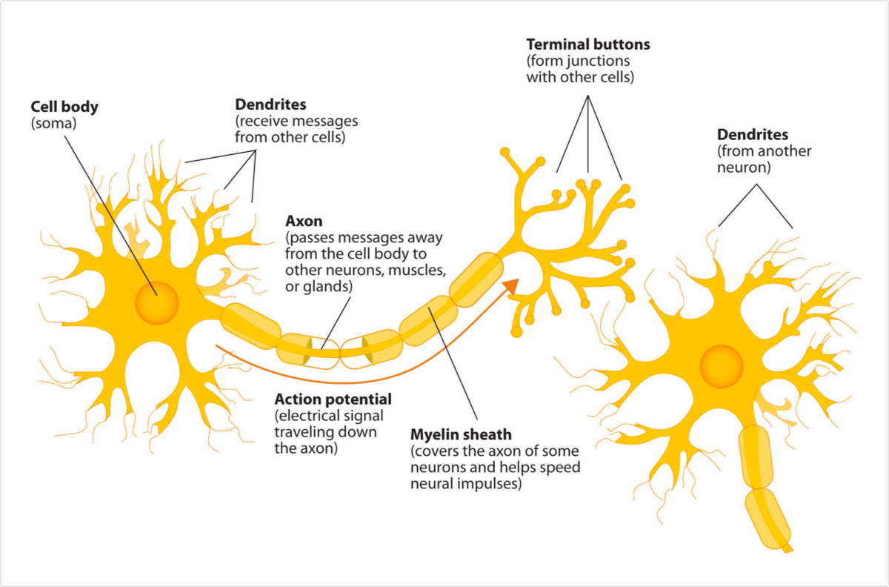
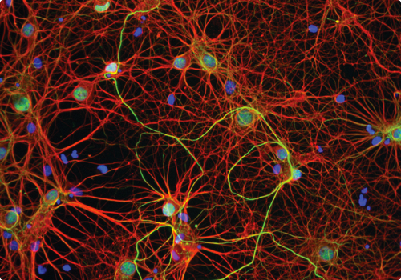
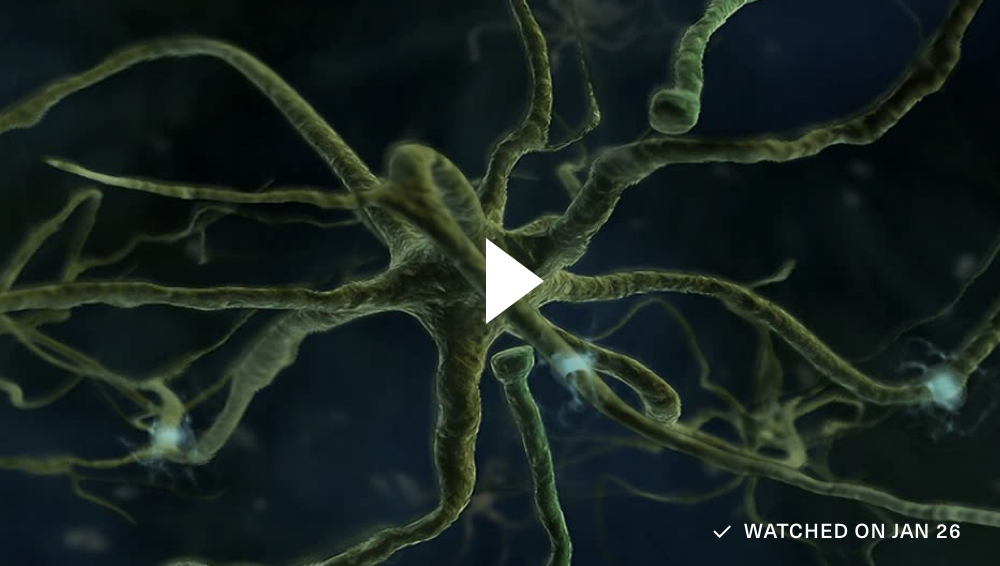
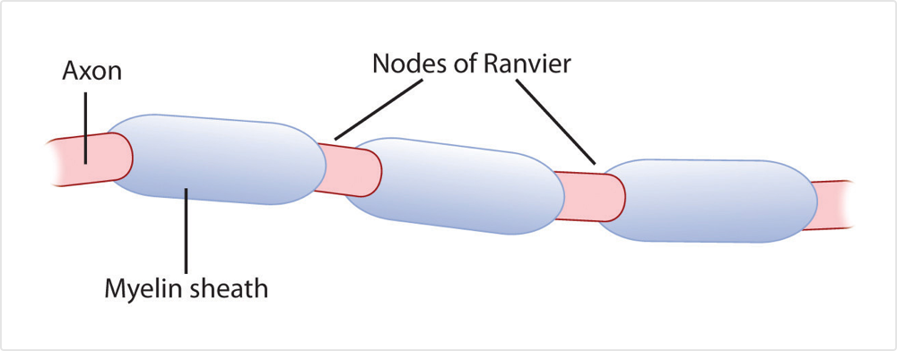

The nervous system is composed of more than 100 billion cells known as neurons. A neuron is a cell in the nervous system whose function it is to receive and transmit information. As you can see in Figure 4.1, neurons are made up of three major parts: a cell body, or soma, which contains the nucleus of the cell and keeps the cell alive; a branching treelike fibre known as the dendrite, which collects information from other cells and sends the information to the soma; and a long, segmented fibre known as the axon, which transmits information away from the cell body toward other neurons or to the muscles and glands. Figure 4.2 shows a photograph of neurons taken using confocal microscopy.
Figure 4.1
Components of the Neuron
Figure 4.2
The Nervous System
The nervous system, including the brain, is made up of billions of interlinked neurons. This vast interconnected web is responsible for all human thinking, feeling, and behaviour.
Some neurons have hundreds or even thousands of dendrites, and these dendrites may themselves be branched to allow the cell to receive information from thousands of other cells. The axons are also specialized, and some, such as those that send messages from the spinal cord to the muscles in the hands or feet, may be very long — even up to several feet in length. To improve the speed of their communication, and to keep their electrical charges from shorting out with other neurons, axons are often surrounded by a myelin sheath. The myelin sheath is a layer of fatty tissue surrounding the axon of a neuron that both acts as an insulator and allows faster transmission of the electrical signal. Axons branch out toward their ends, and at the tip of each branch is a terminal button.
Neurons Communicate Using Electricity and Chemicals
The nervous system operates using an electrochemical process. An electrical charge moves through the neuron itself, and chemicals are used to transmit information between neurons. Within the neuron, when a signal is received by the dendrites, it is transmitted to the soma in the form of an electrical signal, and, if the signal is strong enough, it may then be passed on to the axon and then to the terminal buttons. If the signal reaches the terminal buttons, they are signalled to emit chemicals known as neurotransmitters, which communicate with other neurons across the spaces between the cells, known as synapses.
The Electrochemical Action of the Neuron
The following video clip shows a model of the electrochemical action of the neuron and neurotransmitters.
The electrical signal moves through the neuron as a result of changes in the electrical charge of the axon. Normally, the axon remains in the resting potential, a state in which the interior of the neuron contains a greater number of negatively charged ions than does the area outside the cell. When the segment of the axon that is closest to the cell body is stimulated by an electrical signal from the dendrites, and if this electrical signal is strong enough that it passes a certain level or threshold, the cell membrane in this first segment opens its gates, allowing positively charged sodium ions that were previously kept out to enter. This change in electrical charge that occurs in a neuron when a nerve impulse is transmitted is known as the action potential. Once the action potential occurs, the number of positive ions exceeds the number of negative ions in this segment, and the segment temporarily becomes positively charged.
As you can see in Figure 4.3, the axon is segmented by a series of breaks between the sausage-like segments of the myelin sheath. Each of these gaps is a node of Ranvier. The electrical charge moves down the axon from segment to segment, in a set of small jumps, moving from node to node. When the action potential occurs in the first segment of the axon, it quickly creates a similar change in the next segment, which then stimulates the next segment, and so forth as the positive electrical impulse continues all the way down to the end of the axon. As each new segment becomes positive, the membrane in the prior segment closes up again, and the segment returns to its negative resting potential. In this way the action potential is transmitted along the axon, toward the terminal buttons. The entire response along the length of the axon is very fast — it can happen up to 1,000 times each second.
Figure 4.3
The Myelin Sheath and the Nodes of Ranvier
The myelin sheath wraps around the axon but also leaves small gaps called the nodes of Ranvier. The action potential jumps from node to node as it travels down the axon.
An important aspect of the action potential is that it operates in an all or nothing manner. What this means is that the neuron either fires completely, such that the action potential moves all the way down the axon, or it does not fire at all. Thus neurons can provide more energy to the neurons down the line by firing faster but not by firing more strongly. Furthermore, the neuron is prevented from repeated firing by the presence of a refractory period — a brief time after the firing of the axon in which the axon cannot fire again because the neuron has not yet returned to its resting potential.